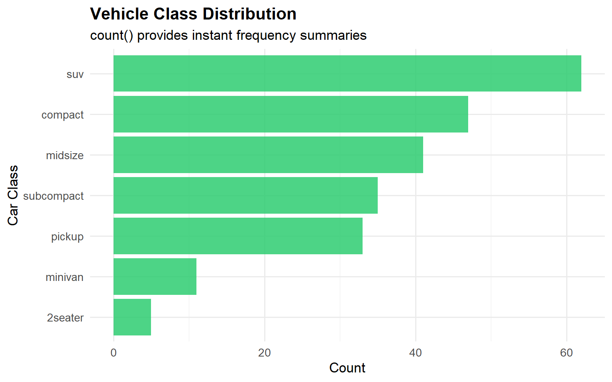
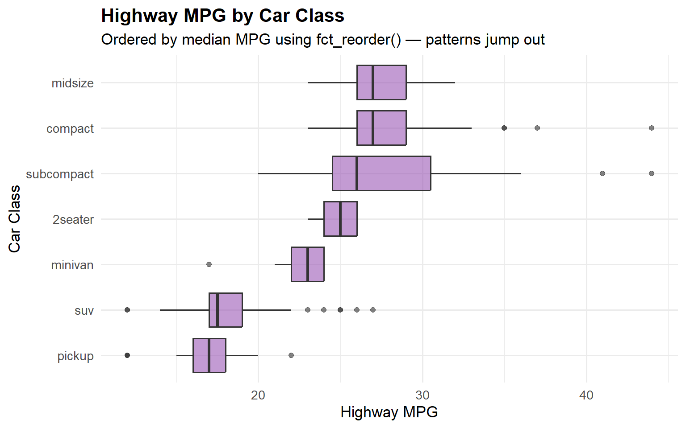
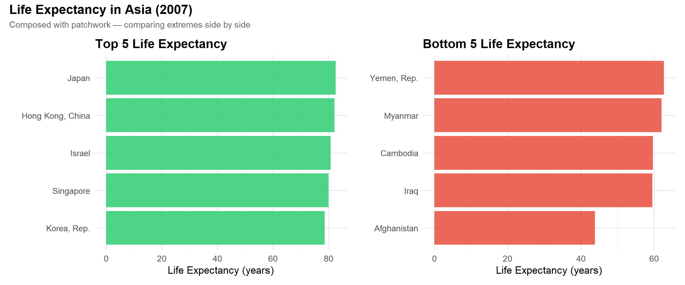

Reflection on advanced ggplot2 techniques — scales, composition, annotation, and the grammar of graphics.
Author
Isabelle Garza
This page documents reflections on advanced data visualization principles and demonstrates key techniques learned through workshops by Thomas Lin Pedersen, David Robinson, and Cédric Scherer, as well as the gt and gtExtras table packages.
The Grammar of Graphics
The workshop by Thomas Lin Pedersen was transformative. The core insight was to treat plots not as monolithic final products, but as composable objects built from reusable parts. This philosophy, rooted in the grammar of graphics, demystifies complexity.
By consciously separating data, aesthetics, geoms, and guides, even the most intricate visualizations become manageable.
Scales and Transformations
Scales are the critical translators between your data and your audience. A plot’s ability to communicate honestly and effectively hinges on scale choices.
The same data tells a completely different story depending on the scale. Linear scales can hide small but meaningful differences when outliers are present, while log scales reveal relative proportions.
Three Essential Functions
From David Robinson’s impromptu data visualization workflow, three functions stood out as essential for rapid exploratory analysis:
dplyr::count() — Quick Frequency Analysis
Show code
mpg %>%count(class) %>%ggplot(aes(x =reorder(class, n), y = n)) +geom_col(fill ="#2ecc71", alpha =0.85) +coord_flip() +labs(title ="Vehicle Class Distribution",subtitle ="count() provides instant frequency summaries",x ="Car Class", y ="Count" ) +theme_minimal(base_size =13) +theme(plot.title =element_text(face ="bold"))

tidyr::separate() — Splitting Combined Fields
Show code
messy_df <-data.frame(id =1:3, info =c("Model_A_Red", "Model_B_Blue", "Model_C_Green"))clean_df <- messy_df %>%separate(info, into =c("prefix", "model", "color"), sep ="_")clean_df %>%gt() %>%tab_header(title ="Cleaned Data with separate()")
Cleaned Data with separate()
id
prefix
model
color
1
Model
A
Red
2
Model
B
Blue
3
Model
C
Green
forcats::fct_reorder() — Meaningful Ordering
Show code
mpg %>%mutate(class =fct_reorder(class, hwy, .fun = median)) %>%ggplot(aes(x = class, y = hwy)) +geom_boxplot(fill ="#9b59b6", alpha =0.6) +coord_flip() +labs(title ="Highway MPG by Car Class",subtitle ="Ordered by median MPG using fct_reorder() — patterns jump out",x ="Car Class", y ="Highway MPG" ) +theme_minimal(base_size =13) +theme(plot.title =element_text(face ="bold"))

Tables as Data Products
The gt package redefined my perception of tables. A table can be more than a crude printout — it can be a sophisticated data product with its own visual appeal.
While charts excel at showing patterns, tables are superior for presenting exact values. The combination of gt’s formatting rigor and the ability to embed mini visuals means a single table can communicate trend, spread, and precise figures simultaneously.
Design Principles from Cédric Scherer
Three key principles for intentional, effective data visualization:
Use perceptually uniform palettes — Palettes like Viridis ensure that changes in color value are perceived as equal changes in data value, without introducing false visual emphasis.
Refine typography and space — Consistent font sizes, adjusted margins, and lighter gridlines create a clear visual hierarchy that guides the viewer’s eye without distraction.
Practice intentional annotation — Annotate sparingly. Highlight the two or three key data points, and let the rest of the data speak for itself.
Life Expectancy: Top and Bottom 5 in Asia
Using patchwork to compose multiple plots into a single, coherent narrative.
Show code
library(gapminder)asia_2007 <- gapminder %>%filter(year ==2007, continent =="Asia")top5 <- asia_2007 %>%slice_max(lifeExp, n =5)bottom5 <- asia_2007 %>%slice_min(lifeExp, n =5)p1 <-ggplot(top5, aes(x =reorder(country, lifeExp), y = lifeExp)) +geom_col(fill ="#2ecc71", alpha =0.85) +coord_flip() +labs(title ="Top 5 Life Expectancy", x ="", y ="Life Expectancy (years)") +theme_minimal(base_size =13) +theme(plot.title =element_text(face ="bold"))p2 <-ggplot(bottom5, aes(x =reorder(country, lifeExp), y = lifeExp)) +geom_col(fill ="#e74c3c", alpha =0.85) +coord_flip() +labs(title ="Bottom 5 Life Expectancy", x ="", y ="Life Expectancy (years)") +theme_minimal(base_size =13) +theme(plot.title =element_text(face ="bold"))p1 + p2 +plot_annotation(title ="Life Expectancy in Asia (2007)",subtitle ="Composed with patchwork — comparing extremes side by side",theme =theme(plot.title =element_text(face ="bold", size =16),plot.subtitle =element_text(color ="gray40") ) )

Reflections on Mastering Data Visualization
Challenges identified: Balancing creativity and clarity, managing the many ggplot2 details that govern scales, themes, and layering. Moving beyond simple charts can feel overwhelming.
Plan to overcome: Execute every new technique in small loops — keep it simple, add one change, and re-read the message. Maintain a short checklist based on module objectives covering correlations, multi-variable layers, animation, and maps. Recreate one plot from tutorials each week to build confidence through practice.